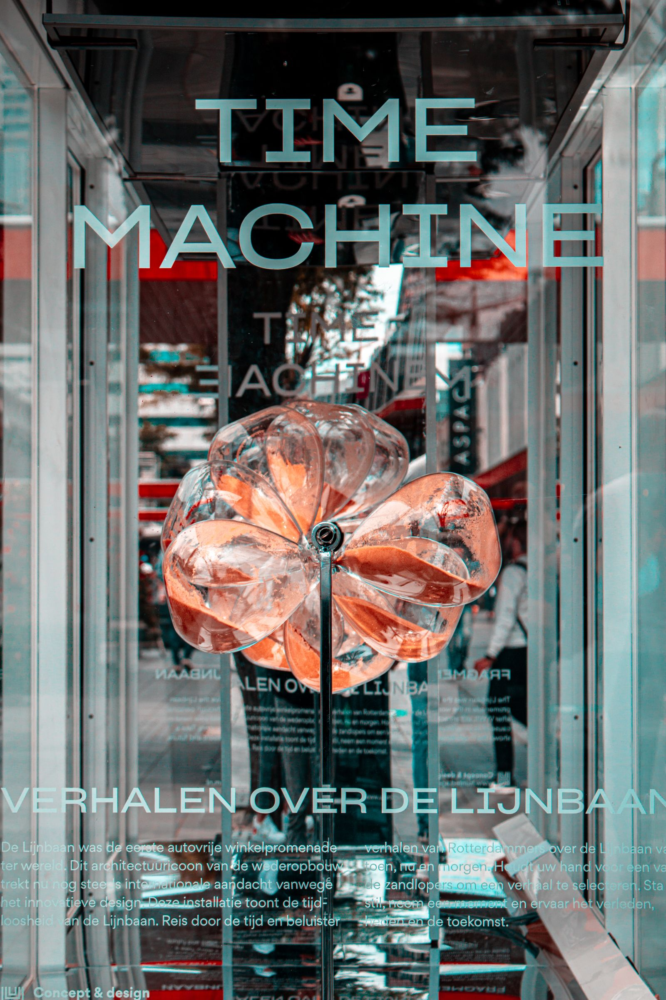
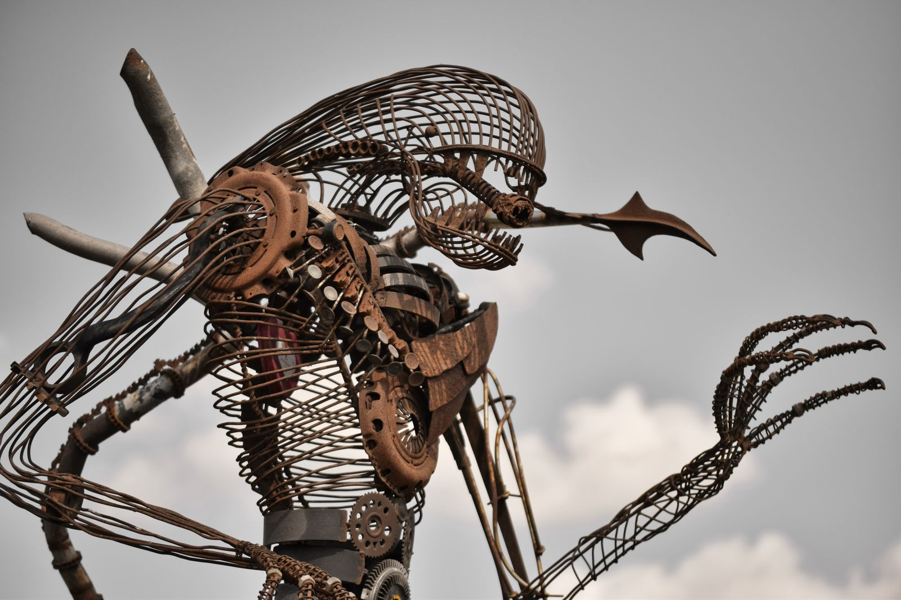
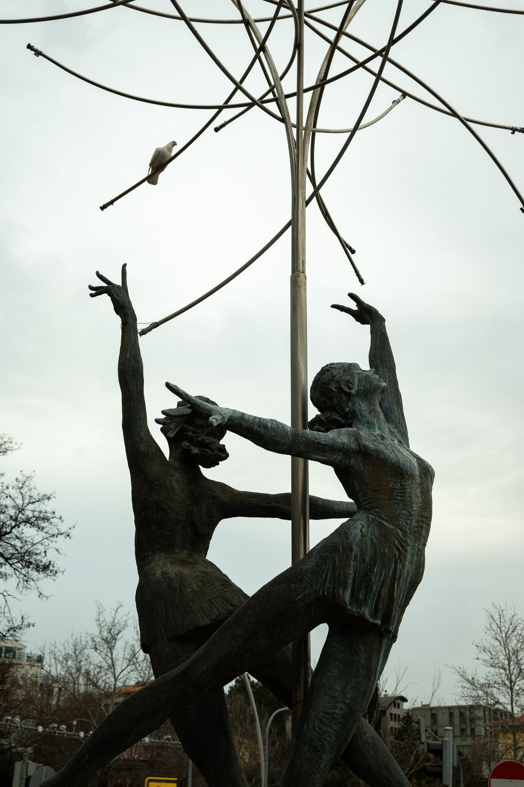

Each file runs brief → decisions → outcome, with its field plate printed: periods, lengths, ratings. The failure and the refusal are filed at the same length as the success — they are the two files a client should read first.
Fifteen Pendulums for a Library Square
Case File 01 · Installed 2023
Field plate — Case File 01
Piece
Pendulum field, 15 arms on one rail — the F1 pattern at full scale
Class
W2 · 28 m/s
Site
Noordhaven Library Square — open square, fetch across the harbour
Base period
2.00 s
Rods
0.994 – 0.462 m (Table F1)
Re-phase
60.0 s
Site wind
Mean 4.6 m/s at 10 m, 12 months
Inspection
12 months
The brief
The Noordhaven Library Trust had a new square and a familiar problem: a handsome space nobody crossed slowly. The brief asked for “a reason to stop” that was not a café terrace and not a screen — and a maintenance commitment the Trust’s two-person estates team could actually carry.
The decisions
The survey ran first: twelve months of the harbour station’s record, checked against a season of the studio’s anemometer at rail height in the square itself. Mean wind 4.6 m/s, with a clean fetch off the water — a genuine field site. The field was set at fifteen pendulums on the seconds pendulum, base period 2.00 s, because a 60-second re-phase fits inside a lunch break: a visitor who waits one minute sees the pattern dissolve and return, which is the whole argument of the piece. Rods were cut to Table F1 exactly. Foundations are engineered — the square is made ground over an old quay — and the pinning drill for forecast storms above 28 m/s was written into the Trust’s own site handbook, in their words, before handover.

Reference photograph: a large installation in a Rotterdam public street (Sebastiaan Stam, Pexels). Shown for the scale of piece a square can carry — it is not the Noordhaven field, which is documented in the Trust’s own archive.
The outcome
Installed spring 2023. The Trust’s counters put lunchtime dwell in the square up by a third in the first year. Two winters on: the arms have been pinned once, ahead of a forecast storm in January 2025 — twenty minutes, one person, as printed. The first two inspections found one loose pivot pin (tightened on the day) and nothing else. The maintenance log is one page long, and the Trust’s Head of Public Realm says the rest of it on the Field page, attached to this file where it belongs.
The Feather Rotor, Storm Eunice
Case File 02 · Damaged 2022 · Repaired 2022
Field plate — Case File 02
Piece
Feathering rotor, three blades, 4.1 m across
Class
W3 · 32 m/s
Site
Business park entrance, outside Utrecht — exposed corner
Installed
2019
Storm
Eunice, 18 February 2022 — gusts to 31 m/s at the site
Feather point
Was 32 m/s · now 26 m/s
Status
Repaired, re-rated in behaviour, swinging
Inspection
6-monthly to 2024, now 12
The brief
A business park wanted a moving mark for its entrance corner — the most exposed point on the site, chosen by the architects for exactly the wind the piece would have to survive. The rotor was rated W3, design gust 32 m/s, blades feathering edge-on at the rating.
What happened
Storm Eunice crossed the Netherlands on 18 February 2022 with gusts at the site to 31 m/s — inside the rating, on paper. What the paper did not carry was the main bearing. The 2021 inspection had noted play in it, in writing, and a replacement was scheduled for the spring. The storm arrived in February. Under gust load the worn bearing let a blade drop enough to strike its mast guard; the blade bent, the rotor stopped itself against the guard, and nobody was hurt — the piece stands in a planted bed, not over a path, which is a siting rule this studio does not bend and this is part of why.

Reference photograph: weathered metalwork against a grey sky (Estonian Stalker, Pexels). The damaged blade is photographed in the client’s copy of this file; the plate above carries the numbers that matter here.
The outcome
The blade was re-made, the bearing replaced with the heavier class, and two behaviours changed in print: the feather point came down from 32 to 26 m/s, so the rotor parks itself earlier and argues with fewer storms; and bearing play became a printed replacement trigger — measured play past the stated limit means replacement at the next visit, not a note for next year. The cost was shared as the terms provide for weather damage, except the bearing share, which the studio carried: the note had been ours, and so was the wait. The piece was re-installed in May 2022 and inspected six-monthly for two years before returning to the standard interval. The file stays in the portfolio because a client is entitled to know what a storm does to the work and to the paperwork.
The Courtyard the Studio Refused
Case File 03 · Surveyed 2023 · Refused, then re-solved 2024
Field plate — Case File 03
Asked for
Pendulum field, 9 arms
Site mean wind
1.1 m/s at piece height
Site
Enclosed museum courtyard, Eindhoven — four storeys on all sides
Calm hours
81% under 2 m/s
Verdict
Field refused — the site cannot feed it
Built instead
Solar-released pendulum, 2024
The brief
A design museum’s courtyard sits at the centre of its building and the centre of its visitor route, and the museum wanted it to move: a nine-pendulum field, scaled down from the library square’s, in the middle of the route where every visitor would pass it twice.
The survey
The survey is the studio’s first deliverable and it is delivered whether or not it flatters the project. Twelve months of station data plus a season of the studio’s anemometer at piece height in the courtyard gave a mean of 1.1 m/s and calm — under 2 m/s, the least air a pendulum field can use — for 81% of opening hours. Four storeys of building on every side had already made the decision; the instruments only reported it. A field there would hang still for most of every day: a photograph of a sculpture, visited twice.
The outcome
The field was refused, in writing, with the data attached — the fourth such refusal in the register. Two honest options were priced in its place: a still work (the courtyard suits one, and other artists make them better than this studio does), or the studio’s solar-released pendulum: a single arm whose release weight is lifted once per cycle by a small panel, swinging about forty minutes per release in still air and resting honestly between releases. The museum chose the released pendulum, installed 2024. Its plaque carries the limit in plain words: this piece moves because a panel lifts its weight; on a windless week it rests by Friday. The museum’s programme lead later wrote that the refusal was the moment the board trusted the studio with the rest of the building. Trust is not a deliverable this studio lists — but it is noted here because the refusal, not the sale, produced it.

Reference photograph: a figurative group at rest in an urban park (ilayda 0700, Pexels) — the honest category of work a still site already suits. Not the courtyard, and not this studio’s work.
Your site has a wind record. Start there.
The survey is €1,200, delivered in writing either way — including when the answer is no.